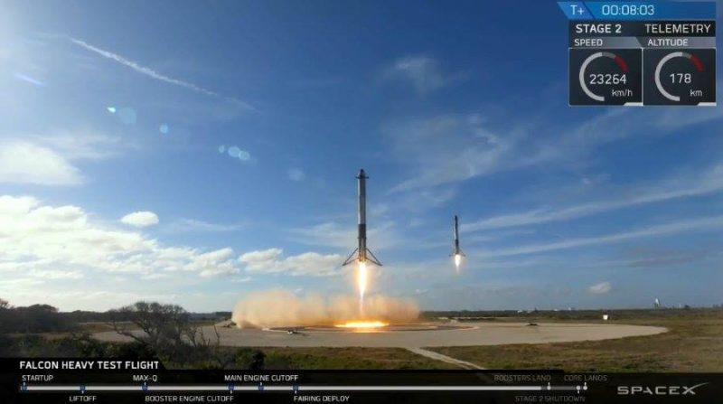
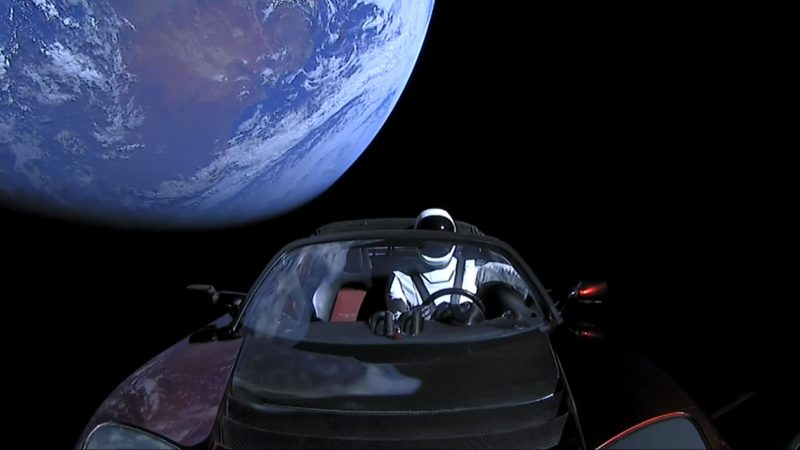
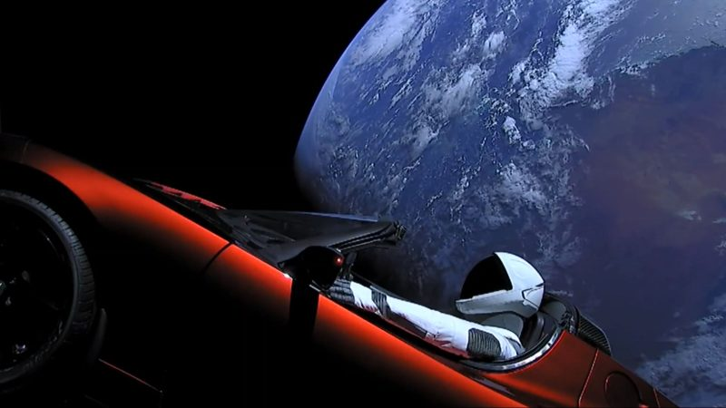
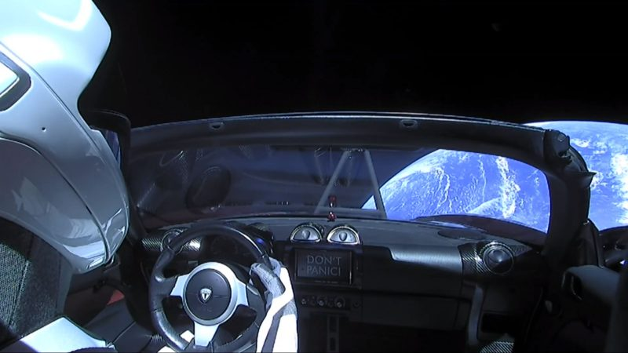

Falcon Heavy wystartował, a Tesla podróżuje już bez osłon!
O mało co nas nerwy nie zjadły… Sytuacja jest obecnie taka: Falcon Heavy pięknie wystartował, a następnie planowo odrzucił dwa stopnie pomocnicze (boostery) oraz drugi stopień rakiety (core). Boostery w przepięknym stylu, jak w balecie, jednocześnie wylądowały na dwóch lądowiskach na Przylądku Canaveral. Niestety, drugi stopień (core), który miał lądować na barce na Atlantyku, wpadł do morza po tym, jak skończyło mu się paliwo i nie wyhamował, jak powinien. Tuż przed posadzeniem go na lądowisku urwała się relacja na żywo i dopiero dziś rano polskiego czasu Elon Musk przyznał, że taka awaria miała miejsce.
Ale bez względu na to, co się stało z drugim stopniem, ta misja i tak przejdzie do historii – i jako krok milowy w dziedzinie lotów kosmicznych, i jako widowisko, które, jak sądzę, na długie lata stworzy niedościgniony wzór dla wszystkich agencji i firm kosmicznych.
Przypomnę, że wydarzenie, które opisuję, to pierwszy udany test rakiety Falcon Heavy, zdolnej wynosić duże ładunki na orbitę okołoziemską i dalej – również na Marsa, o którym Musk od dawna mówi jako o celu misji załogowych statków SpaceX. Dodajmy: rakiety wielokrotnego użytku, co oznacza ogromne oszczędności względem ponoszonych do tej pory kosztów. Sukcesem zakończyło się również wyniesienie na orbitę ładunku symulującego satelitę, czyli… samochodu Tesla Roadster z kierowcą-manekinem o imieniu Starman.
Lot głównego członu rakiety przebiega prawidłowo i z prawdziwym wypasem. Manekin-Starman w aucie Tesla Roadster podróżuje już bez osłon i zadaje szyku na Układ Słoneczny. Za jakieś cztery godziny zostanie wypchnięty przez pierwszy stopień rakiety w stronę Marsa, na tzw. orbitę transferową Hohmanna, która znajduje się pomiędzy orbitami Ziemi i Marsa.
Starmana w Tesli możecie sobie obejrzeć w relacji wideo poniżej, a ponieważ jest niezwykle fotogeniczny, zamieszczam galerię najlepszych ujęć z jego kamer pokładowych. Elonie Musku, robisz to dobrze!
GALERIA STARMANA:
  Komentarze czytelników:
Podziel sie swoja opinia na temat artykulu
Użytkownik 1 | 10.03.2017 | 19:39:01
Przykladowy komnentarz ..............................................................
Użytkownik 2 | 10.03.2017 | 19:40:00
Przykladowy komnentarz ..............................................................